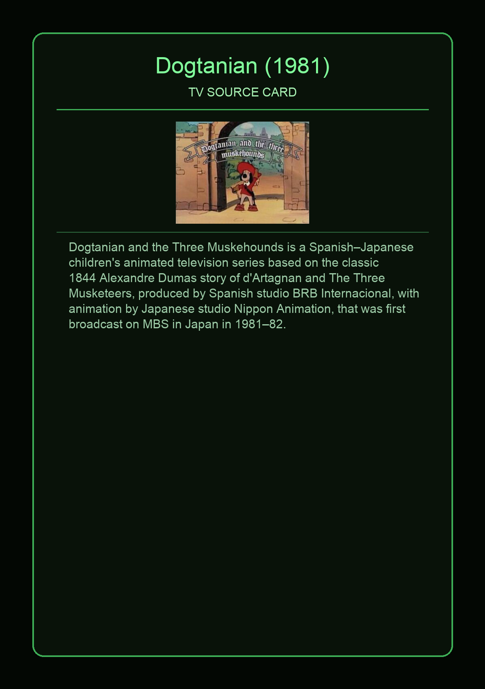
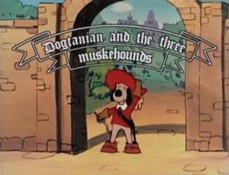

Dogtanian and the Three Muskehounds is a Spanish–Japanese children's animated television series based on the classic 1844 Alexandre Dumas story of d'Artagnan and The Three Musketeers, produced by Spanish studio BRB Internacional, with animation by Japanese studio Nippon Animation, that was first broadcast on MBS in Japan in 1981–82.
This page aggregates references to the source material behind Name Lore entries.